Businesses disappear after fests
Persistent discovery
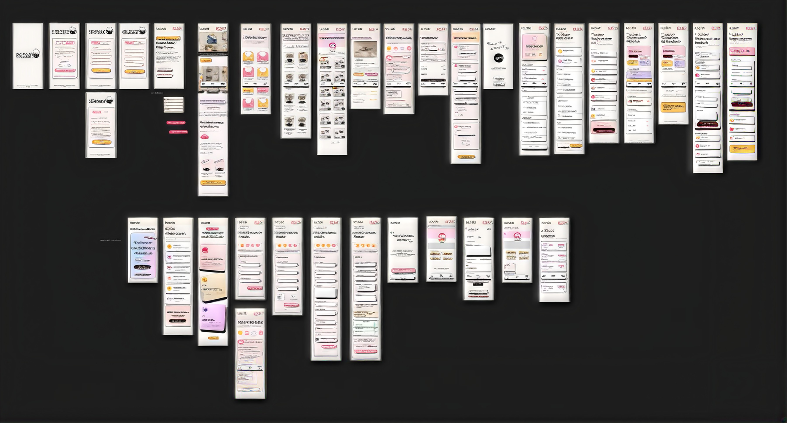
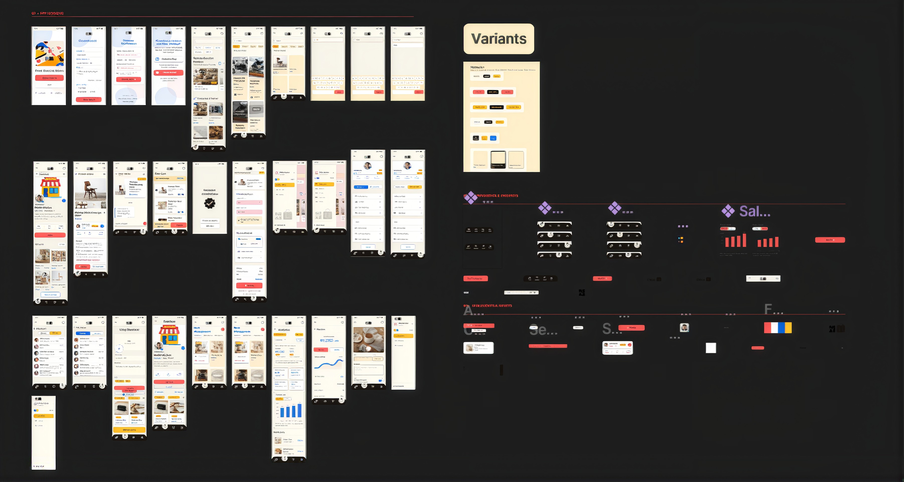
Logo design: serif, luxe and “shopaholic” feel.
Logo design: more structured, less premium, as the audience is students.
Highly guided, instruction-heavy flows
Fewer steps, clearer actions, less explanation required.
Defined Design System.
Student gigs are unorganised
FOCUS and approach
Current ecosystem
Insights
Design opportunity
One storefront for student hustlers, from our Business in Design course.
We noticed a lot of students running side hustles within our college ecosystem, trying to earn pocket money without the hassle of shipping. These gigs rely on word of mouth, social media and college fests!
What kind of gigs?
NearU is a campus marketplace that connects student entrepreneurs with buyers at Anant University, all year round.
We began with wireframe sketches and early branding, testing how a campus marketplace could look and work.
My Role
Timeline
Design
Research Interactions
Siddhi Bhavya
Ridhi Lakhina Naaysha Doshi
May 2026
Interaction
Design
July2026-August2026
Skills
Prototyping,
Figma
Teammates
How might we keep products discoverable beyond a single post, make buyer and seller identities clearer, and bring order details and pickup coordination into one place.
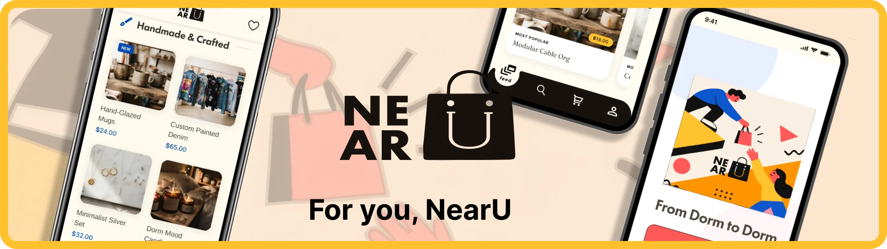
Buyer
Seller
First look
Final look
After much interaction and testing, we reduced the maximalist layout to lower cognitive load, but kept the palette to preserve the app’s playful personality.
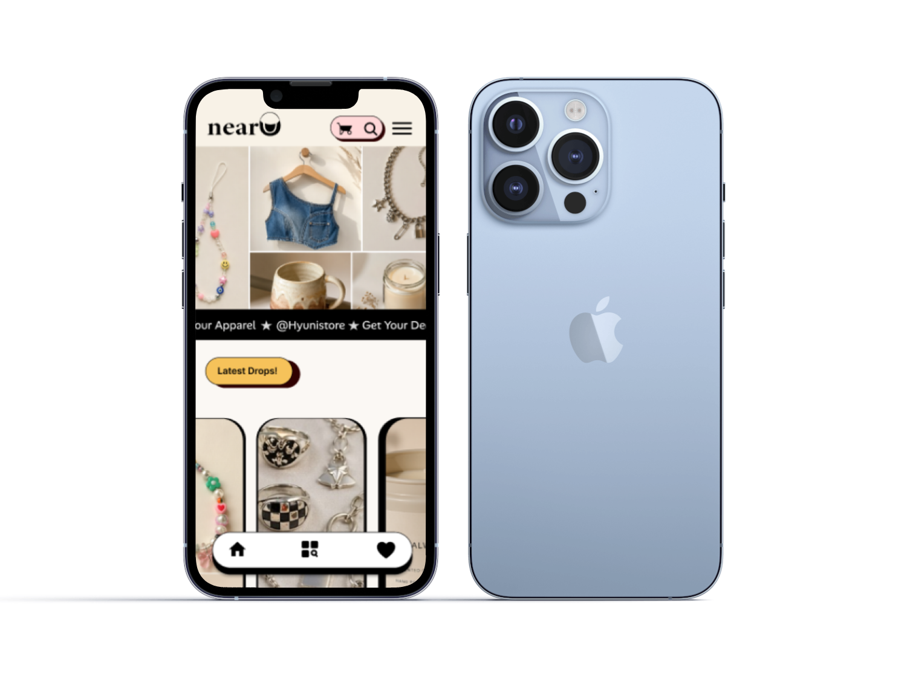
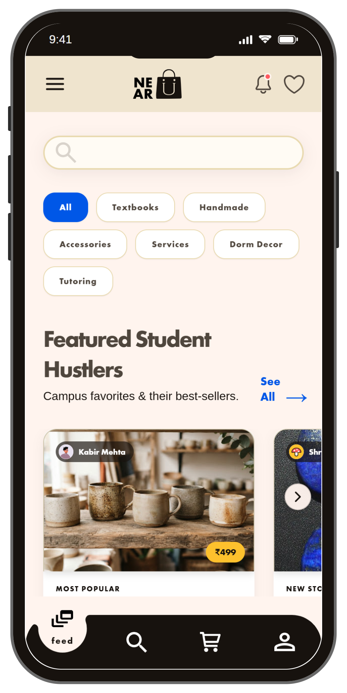
A
B
LouderMore competing elementsMaximal
Clearer hierarchyIntentional use of colorsStill playful
We used colour with intent, to highlight key actions, categories, progress and decisions. The app stayed expressive and the flow easy to scan.
Our research on how students discover, buy and sell on campus found gaps in trust, visibility and order management.
We studied discovery, trust, and the effort of running a small business alongside classes. We interviewed student entrepreneurs and buyers about margins, sourcing and commissioning peers, and looked at the platforms they already use.
Businesses disappear after fests
Persistent discovery
Too much coordination happens manually
Order / communication structure
Student schedules change availability
Seller availability / pickup coordination
Campus commerce depends on trust
Campus-verified accounts
Instagram stories, posts and fest stalls get students noticed.
Challenge: visibility disappears quickly.
Buyers ask, customise and confirm over DMs or WhatsApp.
Challenge: requests become hard to track.
Payment and pickup are arranged by hand, around classes.
Challenge: both sides need reassurance.
HOW STUDENTS SELL TODAY
Meet Kabir, our seller who also likes to buy from fellow students
User Needs
Aa
Aa
core Features
Brand
Font: Futura 100
Secondary Font: Liberation Sans
#FC5956
#0E59D3
#FEC12D
#FFFAEB
Logo
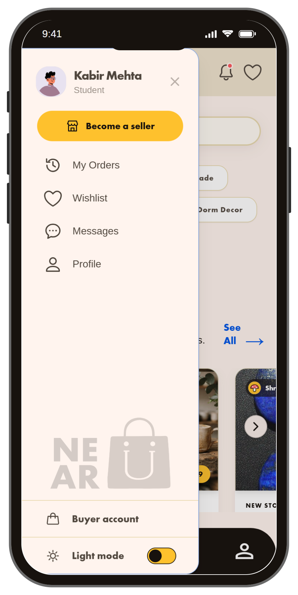
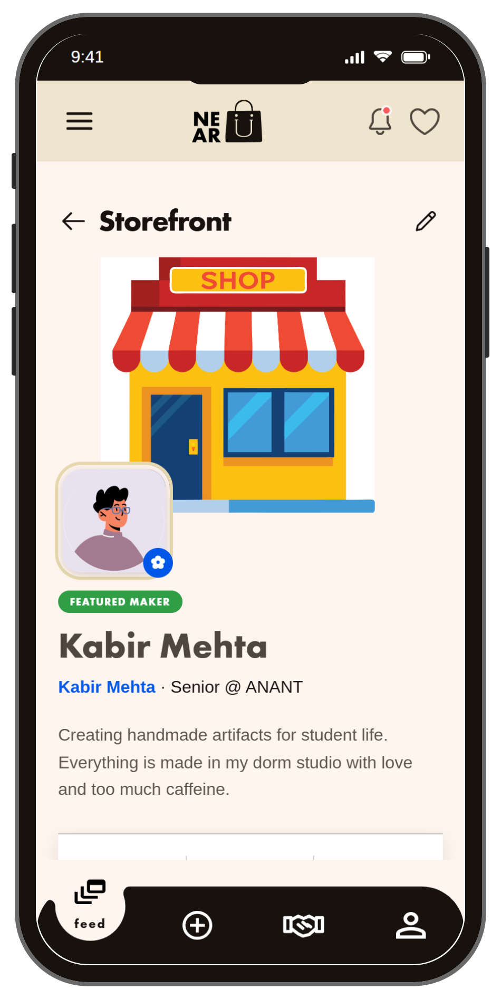
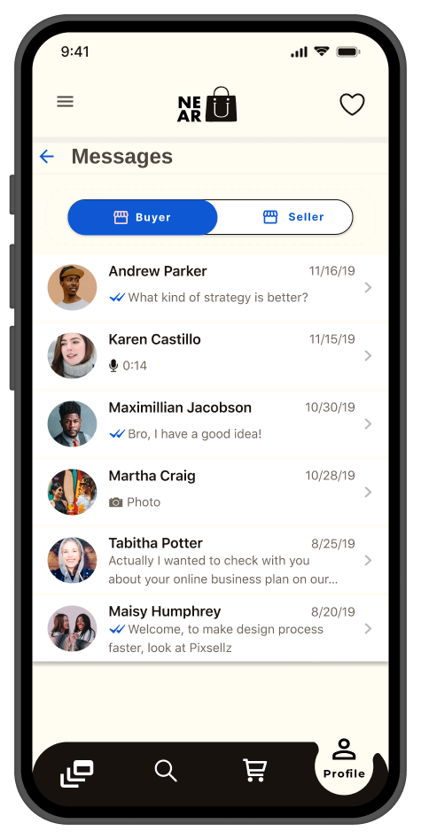
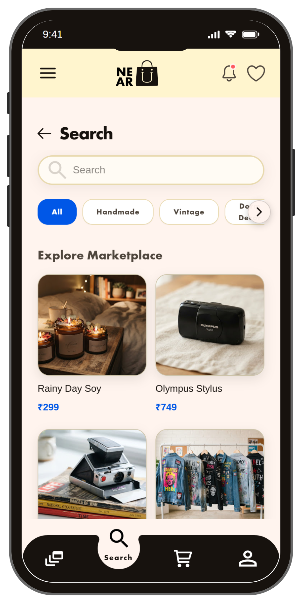
Customizable storefront
Messaging
sevice
Quick search and filter by store or product
Easy mode switch and access to pages
Chatting when shopping
Digital
Payment
Analytics
Payouts
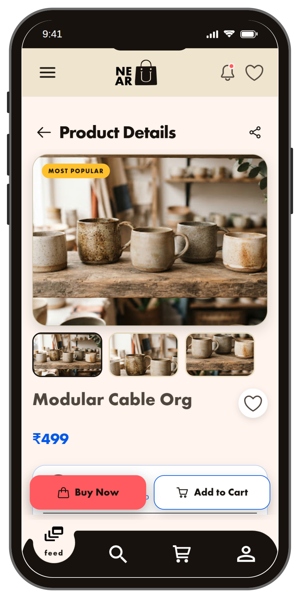
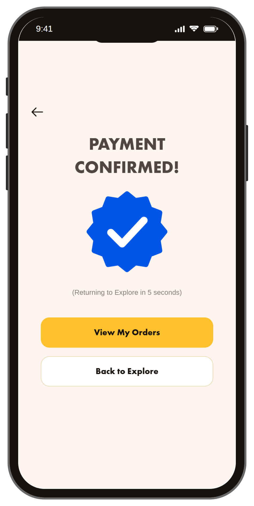
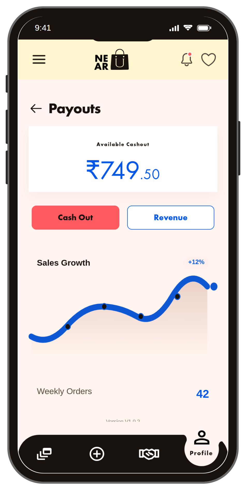
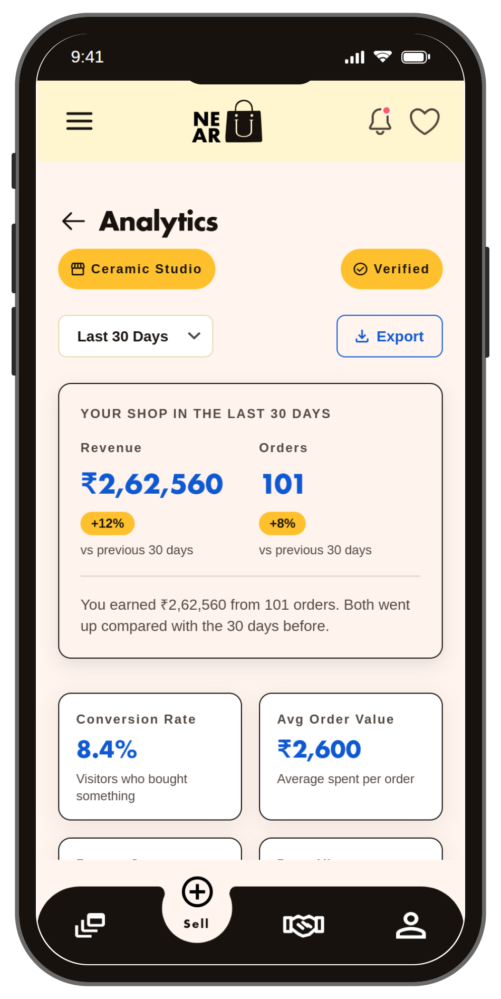
User Flow(Buyer)
User Flow(Seller)
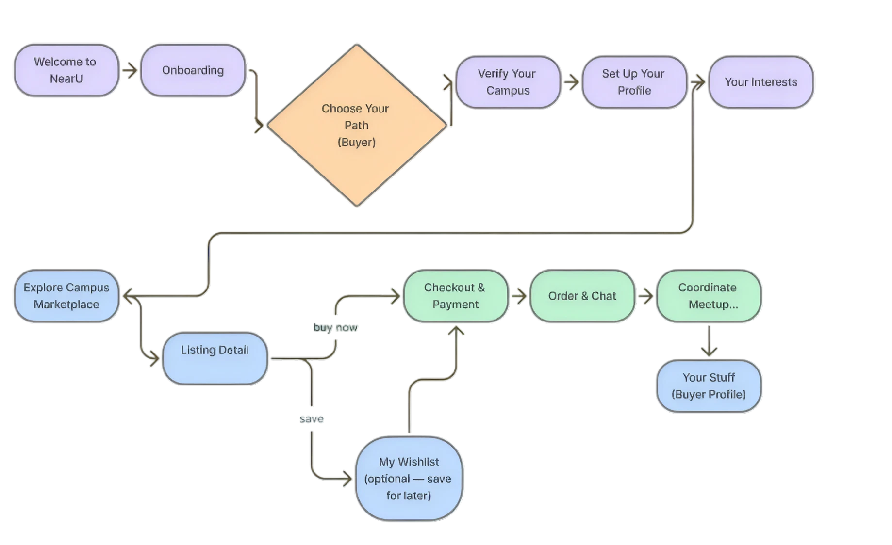
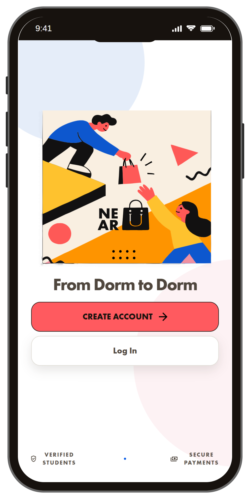
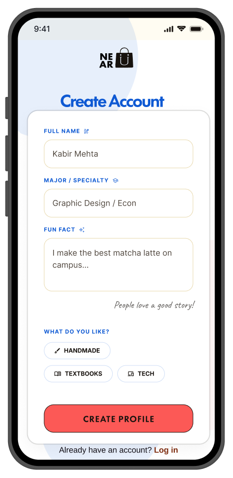
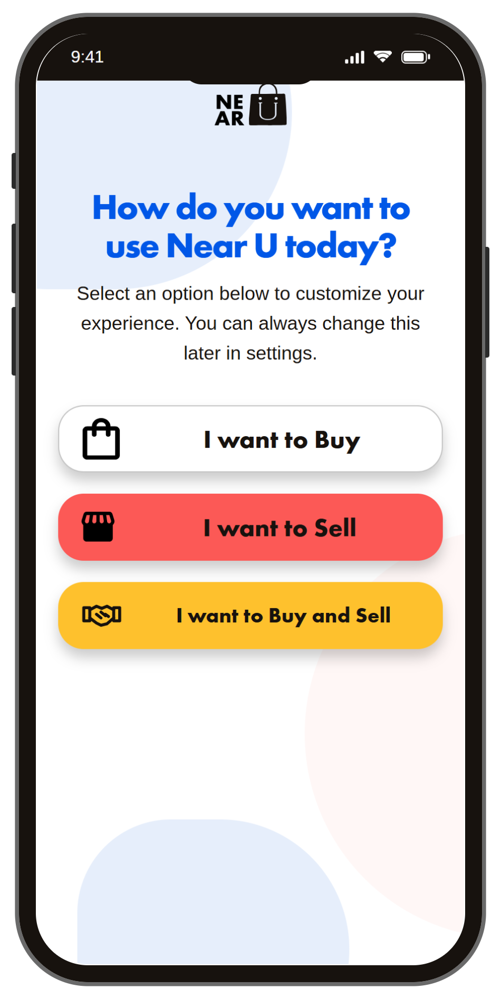
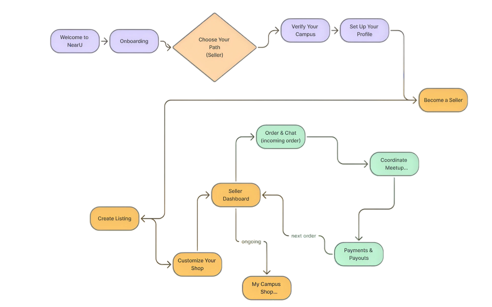
E- Commerce
B2B2C
Clear to browse, easy to manage between classes, and familiar enough to build trust between students.
Onboarding introduces NearU, verifies the student’s campus, and lets them choose to buy or sell, switchable at any time. It is a trusted, campus-only space, shaped to each user.
NearU is a campus commerce service:
Business model: